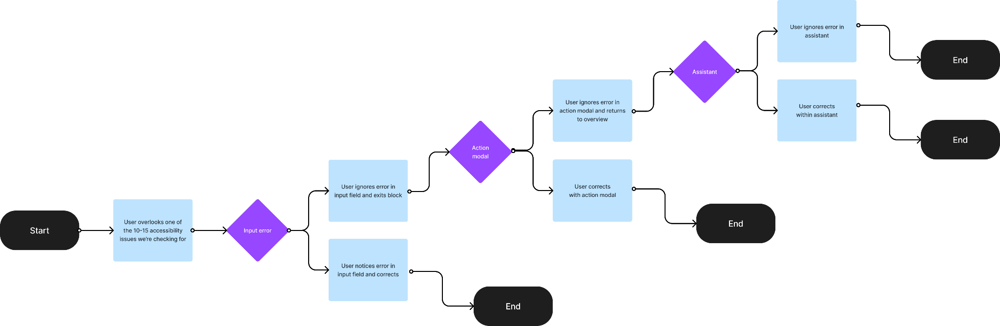
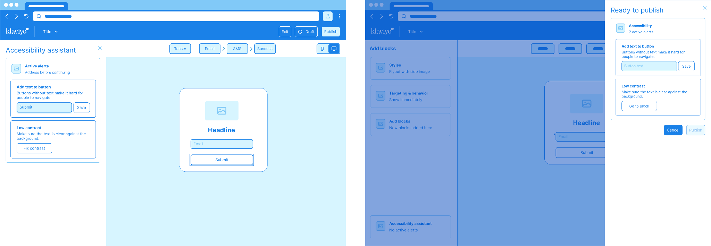
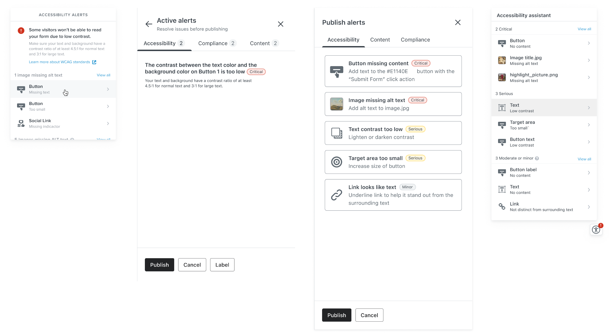
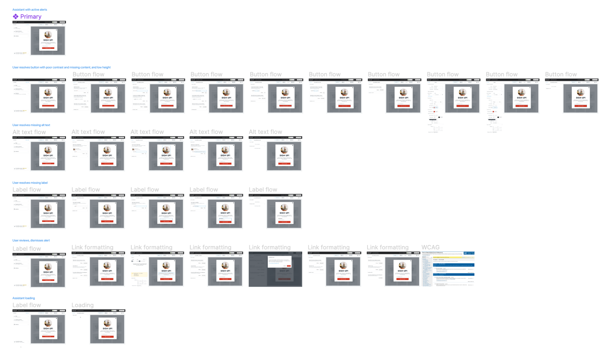

Bringing industry leading accessibility tools to a flagship Klaviyo product.
Hundreds of thousands of sites throughout the world use Klaviyo forms to gather information from their visitors. With that kind of reach we recognize a duty to end users to make our forms as accessible as possible.
When we discovered many Klaviyo forms were not meeting accessibility standards, we took action to build a solution that would help those without familiarity with such standards to learn and resolve common issues with ease. Without sacrificing the flexibility of our builder or introducing barriers that would negatively impact top-level metrics like publish rates and NPS scores, Accessibility Assistant uses a warning system of actionable cards to ensure our users are alerted of potential issues and can resolve them quickly.
I was the sole designer on this project, working with a product manager, one software engineer, and a user researcher to execute my vision. Development took approximately 2 months and the tool launched to Klaviyo users in April 2023.
The interactions below outline the core functionality and use cases for the Discover West Virginia jobs experience.
A short video of a user navigating a prototype to resolve flagged accessibility alerts.
Anatomy of the action card
Review of accessibility cards
The discovery phase began with a third party audit that flagged a number of potential issues in our internal forms. From this list, we were able to break out a number that could be resolved on the engineering side but were left with a number that would need user action to resolve as they are working, for example: alt-text, color contrast, touch target size, and input field labels.
While we have error patterns in our design system, none quite fit the approach we were looking for as far as errors that were instructive and actionable. This necessitated a new pattern that should be adaptable to all of the potential actions.
During this phase I also worked closely with my engineering partner to understand the limitations of the tool that was selected to power the back-end of the check so any solutions I built would be achievable in our planned time.
We approached five different participants for hour-long interviews to get input on early prototypes built and better understand their feeling about our tool as a guide and expert.
Users trusted us to know the best practices, but they would like to see the reasons behind the alerts. If possible, providing further resources outside of the platform, such as support articles or blog posts explaining accessibility.
Regarding alerts, users wanted the option to ignore them as part of the publishing process if a recommendation was not in line with their brand or tone. They were okay with prompts reminding them about outstanding alerts as part of the publishing process, but did not want to be alerted for each item. Users thought this extra alert would not inconvenience them at all.
Broadly, users were interested in resolving issues related to accessibility but wanted to make sure we wouldn’t be interrupting their workflow while doing so.
Review of expected user flows, proposing three steps to resolve alerts starting from the field they’re editing, with the card-based assistant serving as the last step. This approach was based on the idea that an area full of alerts, as beautiful and actionable as the alerts are, is a failure and that focusing earlier on in the experience is ideal.

Wireframes exploring position of accessibility alerts. Given feedback about a drawer overlay our approach shifted to the sidebar.

Exploration of treatments of the drawer approach.

Core flows demonstrating the different paths a user would take wehn resolving alerts through the assistant.

After dispositioning the feedback from the prototype users and our key stakeholders, I worked to arrive at a final design and coordinated with a content designer to refine the language. I worked closely with the engineering team responsible for building the experience to provide feedback and guidance on the design execution.
Out of scope for this project were enhancements I proposed that involved smarter solutions like AI-powered alt text generation and in-context contrast resolution. While work was done to understand the tooling necessary to execute these concepts, achieving the desired features was ultimately not feasible for this launch.
An app for hourly workers laid off during the COVID-19 pandemic to transition into a new job after reopening.
ViewAn experience for Jobcase members to engage with user generated content for career progression and job searches.
ViewBoosting user engagement and satisfaction by delivering on highly-requested features.
View